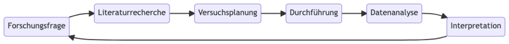
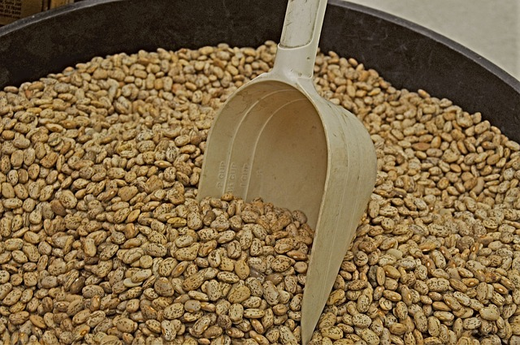
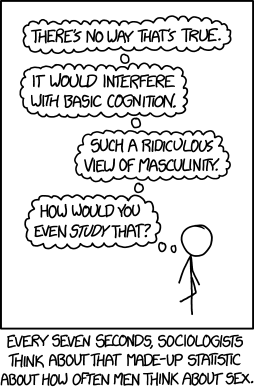

| id | Kriterium | Text |
|---|---|---|
| 1 | Forschungsfrage | … |
| 2 | Ursache | … |
| 3 | Wirkung | … |
| 4 | Hauptergebnis | … |
| 5 | Stichprobengröße | … |
| 6 | Studienablauf | … |
| 7 | Interessant ist … | … |
| 8 | Ansatzpunkt für weitere Studien… | … |
1 Rahmen: Hallo Forschung!

This image and their code are taken from the phantastic Spiro R package bei W. J. Schneider. Eine schöne Fraktalsammlung findet sich bei Flickr. Eine interessante, aber recht eigenwillige Antwort auf die Frage ” Wer bist und wer bin ich?” liefert Hofstadter, Held, und Hofstadter (2008).
1.1 Lernsteuerung
1.1.1 Lernziele
- Sie können einige Beispiele von psychologischen Studien nennen und einige Informationen zu diesen Studien wiedergeben.
- Sie können Definitionsbestandteile für Wissenschaft nennen und diskutieren.
- Sie können die drei Schlussarten der Wissenschaft erläutern und mit Beispielen verdeutlichen.
1.1.2 Blick zum Fahrplan
Sie stehen am Anfang Ihrer Reise üòÑ. Wenn Sie es mir nicht glauben, werfen Sie einen Blick auf Abbildung 2.
1.2 Wissenschaft zum Anschauen
Wissenschaftsmagazine wie In-Mind, Alltagsforschung.de oder Psychologie Heute arbeiten psychologische Forschungsarbeiten auf und präsentieren sie “sofagerecht”, also einfach zu rezipieren.

Der Nachteil solcher Magazine ist die Oberflächlichkeit der Darstellung: Viele Fragen zu der vorgestellten Forschung wird ein Bericht aus einem solchen Magazin unbeantwortet lassen. Der Nutzen solcher Magazine ist in ihrem Inspirationscharakter zu sehen: Man liest von faszinierender Forschung, fängt an, Fragen zu stellen und entwickelt Ideen (und Freude auf) eigene Forschung. Grund genug, dass wir uns einmal mit solchen Magazinen beschäftigen.
Übungsaufgabe 1.1 (Erarbeiten Sie eine Studie aus einem Wissenschaftsmagazin!) Suchen Sie sich eine Studie aus einem Wissenchaftsmagazin und arbeiten Sie die Kernaspekte heraus. Erarbeiten Sie ein Profil der Studie. Orientieren Sie sich an dem Leitfaden aus Tabelle 1.1.
Ein Studienprofil wie in Tabelle 1.1 passt nicht auf jede Studie, aber auf viele. Modifizieren Sie ggf. das Studienprofil, so dass es zu Ihrer Studie passt.
1.2.1 Popscience-Bücher
Fachartikel zu Fachbuch verhält sich wie Wissenschaftsmagazin zu Popscience-Buch.
Hier sind einige Beispiele für solche Bücher.
Beispiel 1.1 (Auswahl an lesenswerten Popscience-Büchern) Kahneman (2012), Ariely (2012), Cialdini (2017), Ariely (2015)
Übungsaufgabe 1.2 (Welche Popscience-Bücher kennen Sie?) Stellen Sie ein Popscience-Buch kurz vor! Orientieren Sie sich an folgender Gliederung:
- Kernaussage des Buches
- Gut fand ich an dem Buch, …
- Weniger gut fand ich an dem Buch, …
- Interessant fand ich …
Tipp: Lassen Sie sich ähnliche Bücher wie in Beispiel 1.1 vorschlagen, wenn Sie keinen Zugang finden.
1.2.2 Echte Forschung aus studentischer Feder
Auf der Seite des Instituts für Wirtschaftspsychologie (iwp) der FOM Hochschule finden Sie eine Auswahl an insgesamt gut aufbereiteten psychologischen Studien aus studentischer Feder.
Übungsaufgabe 1.3 (Einblick in studentische Forschung) Lesen Sie eine studentische Forschungsarbeit quer und präsentieren Sie die wesentlichen Ergebnisse! Nutzen Sie Tabelle 1.1 zur Gliederung Ihrer Analyse.
1.3 Was ist Wissenschaft?
1.3.1 Definitionsversuche
Definition 1.1 (Wissenschaft) Wissenschaft ist ein systematisches Unterfangen, das Wissen erzeugt und organisiert, primär in Form von testbaren Erklärungen von Vorhersagen über das Universum.\(\square\)
Disziplinen, die wissenschaftliche Erkenntnisse zur Lösung praktischer Probleme nutzen (wie Medizin oder Wirtschaftspsychologie), nennt man auch angewandte Wissenschaft; Wissenschaftszweige mit weniger (direktem) Anwendungsbezug nennt man Grundlagenwissenschaft.
Aspekte der Wissenschaft, die die Erzeugung von Wissen in den Vordergrund stellen, nennt man Forschung.
Die Art und Weise der Wissenschaft nennt man die wissenschaftliche Methode. Die wissenschaftliche Methode ist geprägt von dem Versuch, das Universum objektiv und reproduzierbar zu erklären. Damit ist gemeint, dass rationale und fachlich informierte Menschen zu der gleichen Einschätzung eines wissenschaftlichen Arguments kommen sollten. Die Falsifizierung einer Hypothese stellt für viele das Kennzeichen wissenschaftlichen Fortschritts dar. Verifizieren wird hingegen von vielen als kein starkes Mittel wissenschaftlichen Fortschritts gesehen. Daraus kann die Relevanz des Zweifelns (Skeptizismus) für die Wissenschaft abgeleitet werden.
Da die Phänomene der Welt (Evolution, Gravitation, Liebe, Inflation, Agression, …) komplex sind, neigen auch die Erklärungsansätze der Wissenschaft dazu, kompliziert zu sein.
Beispiel 1.2 Die Wissenschaft organisiert ihr Wissen (auch) in Theorien. Theorien sind ein Bündel von Aussagen. Diese Aussagen sind
- aufeinander bezogen
- widerspruchsfrei
- prüfbar\(\square\)
Beispiel 1.3 (Beispiele für Theorien) Zu den bekanntesten und einflussreichsten Theorien gehören die Evolutionstheorie oder die Relativitätstheorie.\(\square\)
1.3.2 Eigenschaften von Wissenschaft
Zu den (gewünschten1) Eigenschaften von Wissenschaft gehören:
- Objektivität: Ein Befund hängt nicht davon ab, wer Messungen oder einen Versuch durchführt. Die Sprache ist nüchtern und unvoreingenommen.
- Offenheit: Der Leser muss nicht glauben, sondern kann selber nachprüfen.
- Abstraktion: Eine wissenschaftliche Aussage soll möglichst weite Gültigkeit besitzen, Spezifika von Einzelfällen werden auf zugrundeliegende Konstanzen verallgemeinert
- Analyse: Komplexe Probleme werden soweit als möglich in Einzelaspekte aufgebrochen2
- Evidenzgründung: Schlüsse werden auf Basis von Daten (Fakten, Messungen, etc.) gezogen.
- Quellen: Aussagen werden mit Quellenangaben untermauert.
Zitate zu den Eigenschaften von Wissenschaft
Non-reproducible single occurrences are of no significance to science. – Karl Popper
Der Fortgang der wissenschaftlichen Entwicklung ist im Endeffekt eine ständige Flucht vor dem Staunen.3 – Albert Einstein
Auf die Frage, was der Nutzen von Grundlagenforschung sei (im Gegensatz zur praktischen Relevanz angewandter Forschung), soll Michael Faraday gesagt haben: „Sir, what is the use of a new-born child“?
Ohne Spekulation gibt es keine neue Beobachtung. – Charles Darwin
In Wissenschaft geht es nicht um Wahrheit, sondern darum, auf bessere Art falsch zu sein. – Thomas Schofield
Wenn alle Experten sich einig sind, ist Vorsicht geboten. – Bertrand Russel
1.3.3 Mathematik als Grundlage der Wissenschaft?

Im XKCD-Cartoon 435 wird Mathematik als Grundlage der Wissenschaften dargestellt.
Übungsaufgabe 1.4 (Ist die Mathematik die Grundlage der Wissenschaften?) Beziehen Sie Stellung zu dem Cartoon und den damit verbundenen Aussagen!
1.3.4 Was ist ein Modell?
Definition 1.2 Ein wissenschaftliches Modell ist eine vereinfachte (aber kohärente) Auffassung eines Forschungsgegenstands (d.h. ein Auszug der Realität). Häufig spielen Metaphern oder Analogien dabei eine Rolle (z. B. lehnt sich das Atommodell nach Bohr an das Sonnensystem an).\(\square\)
Modelle können z. B. grafisch, mathematisch oder statistisch ausgebildet sein.
Modelle erläutern das Zusammenspiel mehrerer Merkmale innerhalb des Modells.
Der Nutzen von Modellen besteht darin, komplexe Sachverhalte verständlich und „greifbar“ oder „anschaulich“ zu machen. Häufig versucht man, wesentliche Größen (wie Einflussfaktoren) in das Modell aufzunehmen und unwesentliche außen vor zu lassen. Die Güte eines Modell kann man an diesem Spagat bemessen.
Beispiel 1.4 Beispiele für Modelle: Globus, Klimamodelle, Doppelhelix der DNA. \(\square\)
Es hat sich herausgestellt, dass viele Phänomene des Universums kompliziert (oder besser: komplex) sind, so dass („richtiges“) Vereinfachen in Form von Modellbildung nützlich ist – tatsächlich der zentrale Weg des wissenschaftlichen Denkens darstellt.
Modelle ermöglichen damit die Beschreibung, Erklärung und Vorhersage von Phänomen (und damit auch die Einflussnahme).
Modelle sind ähnlich zu Theorien, aber meist kleiner gefasst und die Analogie oder Metapher steht im Vordergrund.
1.3.5 Beispiele für Wissenschaften und ihre Einordnung
| Name | Zweig | Empirisch |
|---|---|---|
| Philosophie | Formalwissenschaft | ❌ |
| Mathematik | Formalwissenschaft | ❌ |
| Theoretische Informatiok | Formalwissenschaft | ❌ |
| Psychologie | Sozialwissenschaft | ✅ |
| Physik | Naturwissenschaft | ✅ |
| Maschinenbau | Technikwissenschaft | ✅ |
| BWL | Sozialwissenschaft | ✅ |
| Angewandte Informatik | Technikwissenschaft | ✅ |
1.3.6 Taxonomie der Ziele einer empirischen Wissenschaft
- Beschreiben
- Vorhersagen
- Erklären
- Verändern
1.3.7 Taxonomie der psychologischen Modalitäten
- Denken
- Fühlen
- Handeln
1.4 Wozu Wissenschaft?
1.4.1 Ich will kein Wissenschaftler werden!
1.4.2 Unternehmensberatung und Wissenschaft
Toni arbeitet bei einer Unternehmensberatung. Um als Unternehmensberater zu arbeiten, braucht es wissenschaftliches Denken, sagt Toni. Sie arbeitete erst als Wissenschaftlerin, jetzt in der Unternehmensberatung.
Arbeitweisen in beiden Feldern:
- Evidenzbasiertes Vorgehen: Zahlen, Daten, Fakten
- Systematisches Vorgehen: Hohe Qualitätsstandards bei den Kernprozessen
- Annahmen und Ideen testen: Nicht glauben, überprüfen
- Gute Schätzungen erstellen: “Tacheles reden”\(\square\)
1.4.3 Wissenschaft im Alltag


1.4.4 Wissenschaft und Lernen
Beispiel 1.5 (Aus der Forschung) Handschriftliche Notizen merkt man sich besser als mit der Tastatur getippte (Mueller und Oppenheimer 2014).\(\square\)
1.4.5 Wissenschaft als Wert an sich
Wir verdanken den technischen Fortschritt und damit Wohlstand, Gesundheit, Langlebigkeit und Komfort der Wissenschaft.
Der Geist der Wissenschaft ist: Selber denken. Damit ist Wissenschaftlichkeit die Grundlage der freien Gesellschaft.
Wichtig
Habe den Mut, dich deines eigenen Verstandes zu bedienen! Das Motto Kants fasst die Idee der Wissenschaft zusammen. Damit kann Wissenschaft verstanden werden als die Grundlage einer aufgeklärten Gesellschaft.
1.4.6 Reproduzierbarkeit
Definition 1.3 (Reproduzierbarkeit) Reproduzierbarkeit (“Wiederholbarkeit”) ist das Vermögen, eine Analyse durch Dritte zu wiederholen und zu einem ähnlichen (gleichen) Ergebnis wie in der ursprünglichen Analyse zu bekommen.\(\square\)
Wenn ein Befund nicht reproduzierbar ist, ist es dann echtes Wissen?
1.4.7 Forschung früher und heute

1.4.8 Ein Prozess der Wissenschaft

1.4.9 Ursachensuche
Die Suche nach den Ursache ist vielleicht die wichtigste Aufgabe der Forschung.

Bildquelle: Jastrow, Wikipedia, Gemeinfrei
{kind=link}
flowchart LR Ursache --> Wirkung
Die Ursache U eines Ereignisses E (Wirkung) ist eine notwendige und/oder hinreichende Bedingung, damit E eintritt.
Ein Ereignis kann mehrere Ursachen haben.
Zu jedem Ereignis E gibt es mindestens eine Ursache U.
Zufall ist keine Ursache, sondern eine Umschreibung für die Tatsache, dass die Ursache unbekannt ist.
Kennt man eine Ursache eines Ereignisses, so schließt das nicht aus, dass es andere Ursachen gibt.
Kenntnis der Ursache(n) von E ist i. A. nötig, um den Verlauf bzw. das Eintreten einer Wirkung zu beeinflussen.
Kenntnis der Ursache(n) von E ist i. A. hilfreich, aber nicht nötig, um den Verlauf bzw. das Eintreten einer Wirkung vorherzusagen.
1.5 Wissenschaftliches Schließen
1.5.1 Arten des Schließens
Es gibt drei Arten, wie man zu Wissen (über nicht beobachtbare Dinge) kommen kann (Walach und Stillfried 2013).
Bohnen! Die Grundfesten der Wissenschaft!

Quelle: James_Maynard Pixabay Licence
1.5.1.1 Induktion
Hm ich habe schon 30 Bohnen aus dem Sack gezogen … . Alle weiß. Noch 30 Bohnen … schon wieder alle weiß. Ich hab’s: Die Bohnen müssen alle weiß sein!
- Beschreibung: Sammlung vieler Einzelbeobachtungen; atheoretisch bzw. „theorielos“
- Stärke: Nahe an der „Wirklichkeit“
- Schwäche: Einzelaussagen können nie sicheres Wissen erzeugen; Die Auswahl von Beobachtungen benötigt eine Theorie
1.5.1.2 Abduktion
Vor mir steht ein Sack; ich sehe, dass Bohnen darin sind. Ich finde eine weiße Bohne irgendwo im Raum auf den Boden. Daraus schließe ich: „Die Bohne muss aus dem Sack sein!
- Beschreibung: Lose verknüpfte Einzel-beobachtungen werden zu einer Theorie verknüpft.
- Stärke: Kreativ, schafft neues Wissen im Sinne einer „kühnen Vermutung“
- Schwäche: Fehleranfällig
1.5.1.3 Deduktion
Ich habe die Bohnen in den Sack gefüllt. Sie waren alle weiß. Jetzt nehme ich eine Bohne aus dem Sack: sie ist weiß!
- Beschreibung: Aus einer Allgemeinaussage (Theorie) werden Hypothesen logisch abgeleitet.
- Stärke: Sicheres Wissen bei korrekter Ausführung; „logisch zwingend“
- Schwäche: Keine wirklich neuen Erkenntnisse möglich
Beispiel 1.6 (Beispiele zu den Schlussarten) Induktion „In meiner Studie-Stichprobe war die IQ im Mittel 120. Daraus schließe ich, dass in der Grundgesamtheit aller Studies der IQ im Mittel 120 beträgt“ (Verallgemeinerung).
Abduktion “Joachim, Du hast 10 Mal am Stück Kopf geworfen; das passiert selten bei fairen Münzen. Daher schließe ich, dass Deine Münze nicht fair ist“ (Spekulation! Joachim könnte Glück gehabt haben).
Deduktion „In einer Normalverteilung liegen 2/3 aller Werte höchstens eine SD-Einheit vom Mittelwert entfernt. Mir liegt ein Messwert aus einer Normalverteilung vor, der nur als eine halbe SD-Einheit vom Mittelwert ist. Daher schließe ich, dass er zu den inneren 2/3 aller Werte gehört“ (wenn die Regel der Normalverteilung wahr ist, dann muss der Schluss richtig sein, mit Sicherheit).\(\square\)
Vorsicht
Gerade die Deduktion kann man falsch anwenden. Beispiel für korrekte Anwendung
Annahmen:
- (Alle) Nobelpreisträger sind schlau.
- Albert Einstein ist Nobelpreisträger.
Folgerung:
Albert Einstein ist schlau (richtig!).
Beispiel für falsche Anwendung
Annahmen:
- (Alle) Nobelpreisträger sind schlau.
- Alber Einstein ist schlau.
Folgerung:
Albert Einstein ist Nobelpreisträger (falsch!).\(\square\)
1.5.2 Alle zwei Minuten ein Einbruch?
Auf der Webseite eines Anbieters für Sicherheitstechnik war zu lesen:
Alle zwei Minuten findet in Deutschland ein Einbruchversuch statt.

Übungsaufgabe 1.5 (Wie viele Einbrüche passieren in Deutschland?) Wie fundiert ist obige Aussage zu “alle zwei Minuten” wohl?
1.6 Fazit
Vorsicht: Forschung kann süchtig machen, s. XKCD 1564.
1.7 Vertiefung
Was ist Wissenschaft? – Antworten auf diese Frage versucht u.a. Chalmers und Chalmers (2007) zu geben. Einen breiteren Fokus auf die methodologischen Grundlagen der Psychologie liefert Walach und Stillfried (2013). Wer sich mit den Grundlagen der Logik befassen möchte - als Fundament vernünftiger Aussagen -, der findet etwa bei Suppes (1999) eine nützliche Einführung. Sie zweifeln, ob die Psychologie überhaupt eine Wissenschaft ist? Das ist keine Blasphemie, wie man Galliker (2016) nachlesen kann. Dass Psychologie eine Wissenschaft ist, ist für Dienes (2008) klar. Übrigens ist dieses Buch weit rezipiert worden, mit positivem Echo. Wer Lust hat auf einen Klassiker der Wissenschaftstheorie, der kommt an Popper (2013) nicht vorbei.